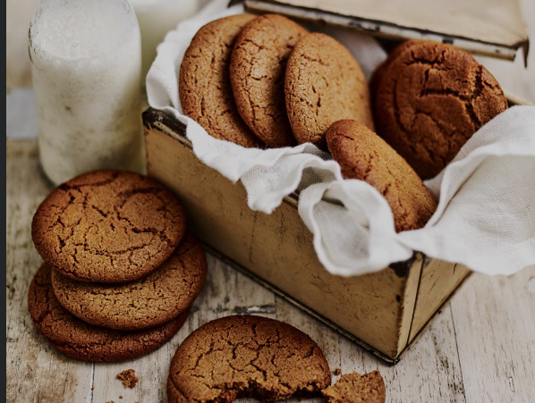

Gingernuts!

Freshly baked gingernut biscuits
A New Zealand tradition to be dunked into your tea and then quickly eaten before it falls apart.
Ingredients:
- 200 grams of butter, chopped
- 1 cup of brown sugar
- 1/2 cup of golden syrup
- 3 cups of plain flour
- 1 tablespoon of ground ginger
- 1 teaspoon of ground cinnamon
- 1 teaspoon of bicarbonate of soda
Directions:
- Preheat oven to 180degrees Celsius. Line 2 oven trays with baking paper.
- In a small saucepan combine butter, sugar and golden syrup. Stir over a low heat until melted and combined then transfer to a large bowl.
- Using an electric mixer beat the mixture until light and fluffy. Allow to cool slightly.
- Sift flour, spices and soda bicarbonate together. Fold into the butter mixture until well combined.
- Roll tablespoonfuls of the mixture into balls. Arrange on trays allowing a little space between each. Flatten slightly with a fork.
- Bake for 12-15 minutes until golden. Transfer to a wire rack to cool.